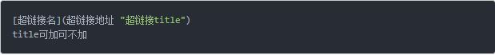

markdown是一种纯文本格式的标记语言。通常简单的标记语法，它可以使普通文本内容具有一定的格式。
相比WYS/WYG编辑器
优点：
1、因为是纯文本，所以只要支持markdown的地方都能获得一样的编辑效果，可以让作者摆脱排版的困扰，专心写作。
2、操作简单。比如：XYS/WYG编辑时标记个标题，先选中内容，再点击导航栏的标题按钮，选择几级标题。要三个步骤，而markdown只需要在标题内容前加#即可。
缺点：
1、需要记一些语法，当然很简单，时间成本较低。
2、有些平台不支持markdown编辑模式。
一、标题
在想要设置为标题的文字前面加#来表示：
一个#是一级标题，两个#是二级标题，以此类推。支持六级标题。
住：标准语法一般在#后跟个空格再写文字。
示例：
效果如下：
这是一级标题
这是二级标题
这是三级标题
这是四级标题
这是五级标题
这是六级标题
二、字体
加粗
要加粗的文字左右分别用两个*号包起来。斜体
要倾斜的文字左右分别用一个*号包起来。斜体加粗
要倾斜和加粗的文字左右分别用三个*号包起来。删除线
要加删除线的文字左右分别用两个~~号包起来。若某些平台不支持，可以使用del /del。
示例：
效果如下：
这是加粗的文字
这是倾斜的文字
这是斜体加粗的文字这是加删除线的文字
三、引用
在引用的文字前加>即可。引用也可以嵌套，如加两个>>三个>>>n个…
貌似可以一直加下去，但没神马卵用。
示例：
效果如下：
这是引用的内容
这是引用的内容
这是引用的内容
四、分割线
三个或者三个以上的-或者*都可以。
示例：
效果如下：
可以看到，显示效果是一样的。
五、图片
语法：
示例：
效果如下：
上传本地图片直接点击导航栏的图片标志，选择图片即可。
六、超链接
语法：

示例：
效果如下：
简书
百度
NASA Image
MarkDown 文档
注：markdown本身语法不支持链接在新页面打开，貌似马克飞象做了处理是可以的。别的平台可能不行了，如果想要在新页面打开的话，可以用html语言的a标签代替。
七、列表
- 无序列表
语法：
无序列表用-+*任何一种都可以。
效果如下：
- 列表内容
- 列表内容
列表内容
有序列表
语法：
数字加点
效果如下：
- 列表内容
- 列表内容
- 列表内容
列表嵌套
上一级和下一级之间敲三个空格即可。一级无序列表内容
- 二级无序列表内容
- 二级无序列表内容
- 二级无序列表内容
一级无序列表内容
- 二级有序列表内容
- 二级有序列表内容
- 二级有序列表内容
一级有序列表内容
- 二级无序列表内容
- 二级无序列表内容
- 二级无序列表内容
一级有序列表内容
- 二级有序列表内容
- 二级有序列表内容
- 二级有序列表内容
八、表格
语法：
效果如下：
姓名|技能|排行
—|—|—
刘备|哭|大哥
关羽|打|二哥
张飞|骂|三弟
九、代码
语法：
当行代码：代码之间分别用一个反引号包起来。
代码块：代码之间分别用三个反引号包起来，且两边的反引号单独占一行。
注：为了防止转译，前后三个反引号处加了小括号，实际是没有的。这里只是用来演示，实际中去掉两边小括号即可。
示例：
单行代码：
代码块：
效果如下：
单行代码:create database hero;
代码块:1
2
3
4
5function fun()
{
echo "这是一句非常牛逼的code";
}
fun();
十、流程图
效果如下：
1 | st => start: 开始 |